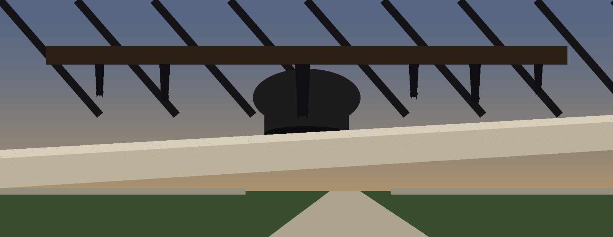
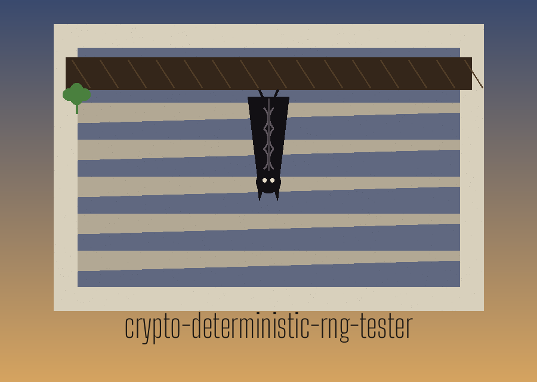
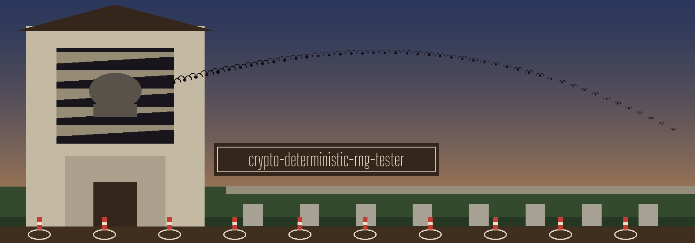

crypto-deterministic-rng-tester: The Bat Roost of the Belfry
Theme: The Bat Roost of the Belfry. Headings in Big Shoulders Text, running text in Alegreya Sans.



Two Generators, No Seed
The program generates bytes, gathers bytes, and counts byte values. Its title speaks of determinism, and the code tests no determinism. The first choice is secrets, which draws fresh bytes each call. The second choice is hkdf, which derives bytes with HKDF and the SHA256 hash, and its input material is fresh each call too. Neither choice takes a seed from the caller, and neither choice can repeat a run on request.
One Store, One Count
One run loops for the iteration count, and each output joins one growing store. Tests run once, on the whole store, at the end. Output length sets each secrets draw. Output length does not set HKDF output size; HKDF size comes from its own length control, --hkdf_length, with a default of 32. The output length default is 1024 bytes and the iterations default is 1000.
What the Count Cannot Say
Byte counts are tallied, and the expected count is the total length divided by 256. Chi squared is summed over byte values that occur; byte values that never occur add nothing to the sum. No significance level is applied, no p value is worked out, and no pass or fail line follows the chi squared figure.
A Warning Is the Only Verdict
Shannon entropy is worked out only when the --entropy_check switch is given. A figure below 7.0 draws a warning about low entropy and possible bias; a figure at or above that line draws a passed note. That warning is the only verdict in the program. Generation faults are logged as errors, the main flow then returns, and no failure exit code is set for them. The program needs the cryptography package, which a requirements file in the repository names. The working form is python3 main.py, then the controls: --generator, --output_length, --iterations, --hkdf_salt, --hkdf_info, and --hkdf_length.
Chamber Glossary
Sally means the striped woollen grip on a bell rope. Stay means the timber prop that holds a swung bell poised mouth up. Slider means the track that stay runs in. Tenor means the heaviest bell, and treble the lightest. A peal means a long, ordered ringing that runs for hours without repeating a change. Striking means how cleanly each bell sounds in its turn.
Record preserved from the README
# crypto-deterministic-rng-tester
Tests the output of random number generators used in crypto systems for statistical randomness. The seeded generator is deterministic: it derives bytes through HKDF with the --seed value as the input keying material, a fixed salt (deterministic-rng-tester-salt) and a fixed info string (deterministic-rng-tester-seeded), runs twice on the same seed in one run, and reports whether the two outputs match. The secrets and hkdf generators draw fresh system randomness and are not deterministic. The chi-squared test compares the statistic to the critical value 293.25 for 255 degrees of freedom at the 0.05 significance level and logs a pass line or a bias warning line, flagging potential biases. - Focused on Basic cryptographic operations
## Install
`git clone https://github.com/ShadowStrikeHQ/crypto-deterministic-rng-tester`
## Usage
`./crypto-deterministic-rng-tester [params]`
## Parameters
- `--generator`: The generator to test: secrets, hkdf, or seeded. Defaults to secrets.
- `--seed`: Seed value for the seeded generator. Required when --generator is seeded.
- `--output_length`: The length of the output to generate in bytes. Defaults to 1024.
- `--iterations`: The number of iterations to run the test. Defaults to 1000.
- `--hkdf_salt`: The salt to use for HKDF. If not provided, a random salt is generated.
- `--hkdf_info`: The info to use for HKDF. Defaults to
- `--hkdf_length`: The length of the output for HKDF. Defaults to 32.
- `--entropy_check`: No description provided
## License
Copyright (c) ShadowStrikeHQ
Facts from the code, stated in the prose
This record names: secrets, hkdf, SHA256, --generator, --output_length, --iterations, --hkdf_salt, --hkdf_info, --hkdf_length, --entropy_check, 1024, 1000, 32, 7.0, python3 main.py, cryptography.